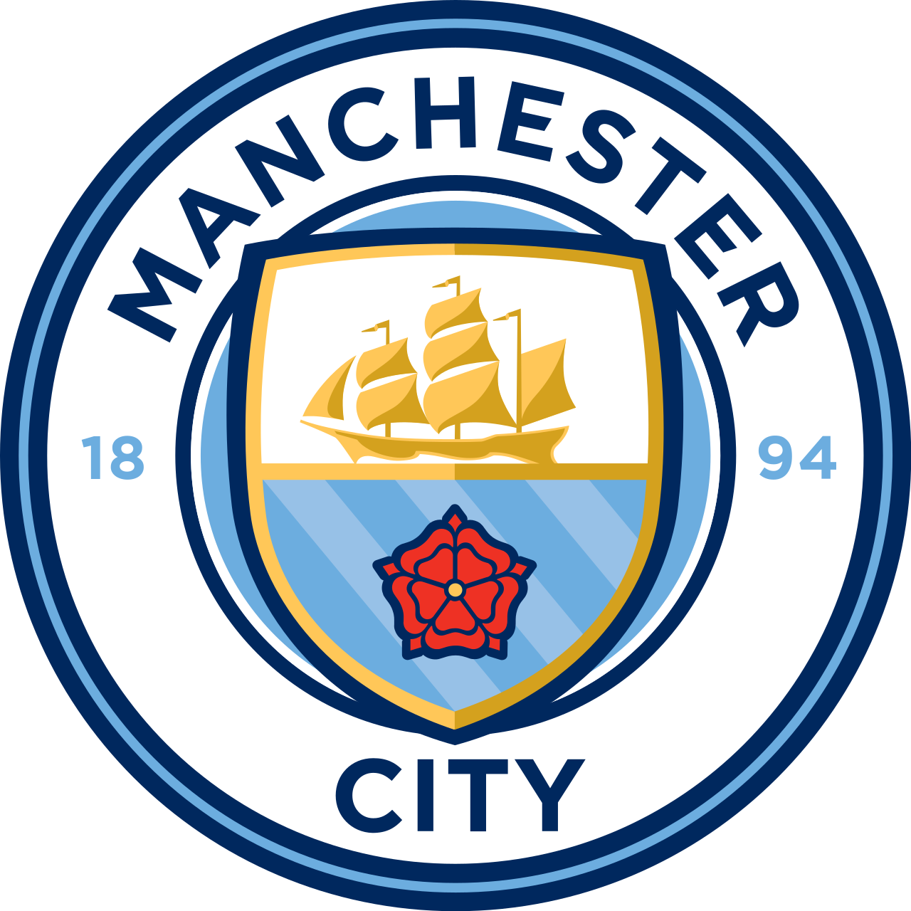

El club de Manchester
El Manchester City es un club inglés fundado en 1880. Su estadio es el Etihad Stadium.
| Dato | Información |
|---|---|
| Fundación | 1880 |
| País | Inglaterra 🏴 |
| Ciudad | Manchester |
| Estadio | Etihad Stadium |
| Liga | Premier League |
El Manchester City conquistó su primera Champions League en la temporada 2022/23.
| Jugador | Posición |
|---|---|
| Erling Haaland | Delantero |
| Phil Foden | Centrocampista |
| Rodri | Centrocampista |
El Manchester City consiguió su primera Champions League en 2023.